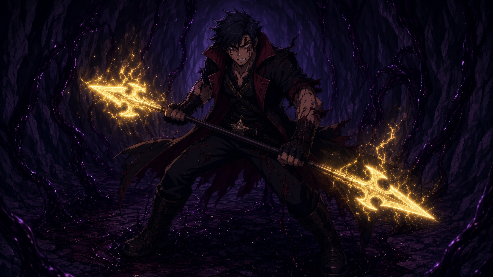

100%

The dark pressed around him. He felt it at the edges of his meager circle of flickering light, licking and lapping and growling. He felt the gold hot thread of magic sewing his wounds together. Wounds that had already torn open again and again. The thread would not last long.
“You are injured.” The voice was dispassionate in tone, as always. But its choice of facts spoke volumes.
“I am.”
“You cannot fight and recover. Advise dream walking now—”
“No.” Leon’s voice cracked as he said it. His skin was tight from blood-loss. His heart had given up beating a while ago. No point putting in the act when it was just pumping dust. “If I remove your light, the darkness will flood the tunnels and more people will die. We hold.”
There was a long and uncomfortable silence. On his hand, the golden, glowing abstract key symbol that marked him as the bearer of Tenmei, his Key, his weapon and companion seemed dull in the oppressive darkness. All around him, its spears of light spiked the ground and ceiling, burning fiercely, but waning even as he watched. It was too much darkness. His light could not overpower it. Only hold it off.
“You will not survive this.”
“No.”
More silence. The spears spilled out their light, the spell that burned away the darkness spooling itself out until Leon could hear the writhing ink beyond his circle scraping towards him again. He could just make out the twisting half forms beyond his light. Pale yellow circles of not-eyes sensing the darkness within him, even cocooned in his circle of hard, cutting arcane incandescence.
“I will stay with you to the end.” This was new. Leon could almost hear Tenmei pleading in its statement. It was a request. One that they both knew Tenmei could not fulfill.
“You will not. We will fight this last wave, we will cast Ray Thorns one last time and I will dismiss you from service to find your next wielder.” It was the only way to ensure that the key was not lost to darkness. Leon knew his bodies limits. Had tested his regeneration, eldritch weaknesses, loss of blood to their absolute maximum. He had long ago exceeded all of it. The only reason the light around him didn’t turn him to ash was Tenmei’s binding. And that took energy. Energy neither of them had left.
“They are coming. The king will have finished his evacuation in another 10 minutes.” Leon didn’t question it. Tenmei had a mind of computation and facts. If it said something was so, it was the result of days of calculation performed in an instant.
“Then we give him 10 minutes.”
“I shall give it to you, Leon… You will be missed… I…”
Leon never got to hear Tenmei’s last words. The spell around him fell at all once, the tunnel plunged into absolute blackness. He stood up, called Tenmei’s form to himself, a spear of golden sunshine splashed into shape, and he thrust forward into darkness with vampiric speed and brutality. Where he pierced, the darkness melted and where it resisted, it shattered. Ink burned away by rays of sunshine. He felt his own skin peel off his palms. He was nearing his end. He couldn’t fight for much longer…
And then he saw it. Behind the darkness, something he could scarcely understand much less believe. A shape he could not absorb. Light that burned him away. He threw Tenmei away a second too late. The light was burning him too much. He tried to grab hold of the darkness around him, to shield himself from what was coming towards him, but it was already too late. The darkness slid away from him as though a puppet on strings. He grabbed his right wrist with his left and twisted.
There was a snap. A pop.
He threw the hand into the darkness. He felt his form collapse almost immediately. He had only long enough to call forth all the darkness his vampire body had been storing for 170 years to cast the first and last spell from ink and blood since King William had found him, had saved him and his closest friends from their world collapsing.
“Black Door.” His voice was the last to go, burned away by the light, but the spell completed itself. He could feel the last of his power burst from him to complete it. It found his hand guided by paracausal power. It swept it beyond the reach of all light to deepest currents of blackness between worlds.
Tenmei was not safe. But it was not in the hands of that thing. As his consciousness melted away into the true nothingness, obliterated by the form behind the darkness, Leon Garo, Prince of Ainsania, the last Vampire, had only one thought.
“I love you too, Tenmei. Say good bye to Lou for me.”